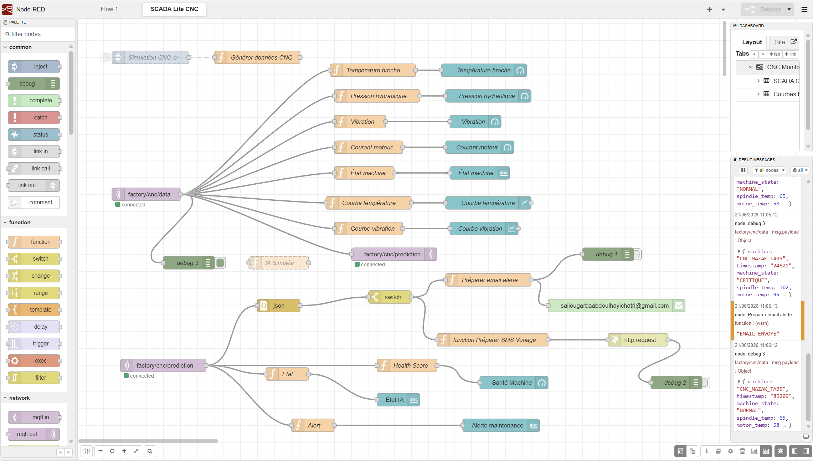

Contexte
Ce projet reproduit une chaîne complète de supervision industrielle pour une machine CNC. Il associe une interface embarquée, la communication MQTT, un moteur de Machine Learning et un dashboard SCADA Lite.
Problématique
Comment surveiller l’état d’une machine, détecter les dérives de fonctionnement et anticiper les pannes avant un arrêt critique ?
Objectifs
- Simuler et transmettre les données de capteurs CNC.
- Superviser les mesures en temps réel.
- Prédire l’état de la machine grâce au Machine Learning.
- Afficher un score de santé.
- Envoyer des alertes Email et SMS.
Fonctionnement
La TAB5 permet de saisir ou de générer automatiquement les valeurs de capteurs. Les données sont publiées via MQTT, puis analysées par un modèle Random Forest en Python. Node-RED affiche les mesures, la prédiction et le score de santé sur un dashboard SCADA Lite.
Résultats
- Communication MQTT bidirectionnelle fonctionnelle.
- Prédiction en temps réel : NORMAL, FATIGUE, DEGRADE, CRITIQUE.
- Affichage de la prédiction sur TAB5 et dashboard Node-RED.
- Historisation des mesures dans un fichier CSV.
- Alertes Email et SMS en cas d’état critique.
Perspectives d’amélioration
Connecter de vrais capteurs industriels, intégrer Modbus TCP ou OPC UA, sécuriser MQTT avec TLS et adapter le système à d’autres équipements industriels.
Galerie du projet

